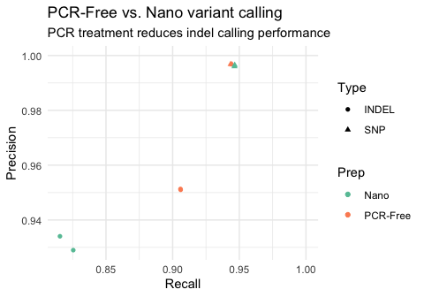

Tools to help analyse your hap.py results in R. See the documentation for usage and examples.
Demo
This example walks through a comparison of samples prepared using PCR-Free versus Nano library preps with 2 replicates per group.
library(happyR)
library(tidyverse, quietly = TRUE)
# groups are defined either by a CSV or data.frame with three
# required columns: a label for each group (group_id), a unique
# label per replicate (replicate_id) and a path to the respective
# pre-computed hap.py output (happy_prefix)
extdata_dir <- system.file("extdata", package = "happyR")
# these extdata files are supplied with the package
samplesheet <- tibble::tribble(
~group_id, ~replicate_id, ~happy_prefix,
"PCR-Free", "NA12878-I30", paste(extdata_dir, "NA12878-I30_S1", sep = "/"),
"PCR-Free", "NA12878-I33", paste(extdata_dir, "NA12878-I33_S1", sep = "/"),
"Nano", "NA12878-R1", paste(extdata_dir, "NA12878-R1_S1", sep = "/"),
"Nano", "NA12878-R2", paste(extdata_dir, "NA12878-R2_S1", sep = "/")
)
# here the above table is used to read hap.py output files from disk
# and attach the group + replicate metadata
hap_samplesheet <- read_samplesheet_(samplesheet)
# extract summary PASS performance for each replicate and plot
summary <- extract_results(hap_samplesheet$results, table = "summary") %>%
inner_join(samplesheet, by = "happy_prefix") %>%
filter(Filter == "PASS")
ggplot(data = summary, aes(x = METRIC.Recall, y = METRIC.Precision, color = group_id, shape = Type)) +
geom_point() + theme_minimal() +
xlim(NA, 1) + ylim(NA, 1) +
scale_color_brewer(palette = "Set2") +
labs(x = "Recall", y = "Precision", color = "Prep") +
ggtitle("PCR-Free vs. Nano variant calling",
"PCR treatment reduces indel calling performance") 
System requirements
Originally developed for R v3.4.0. Tests are run using the most recent available R versions (incl. devel) on Ubuntu (Trusty) and OS X (El Capitan) platforms. happyR has not been tested on Windows. Dependencies are listed in DESCRIPTION.